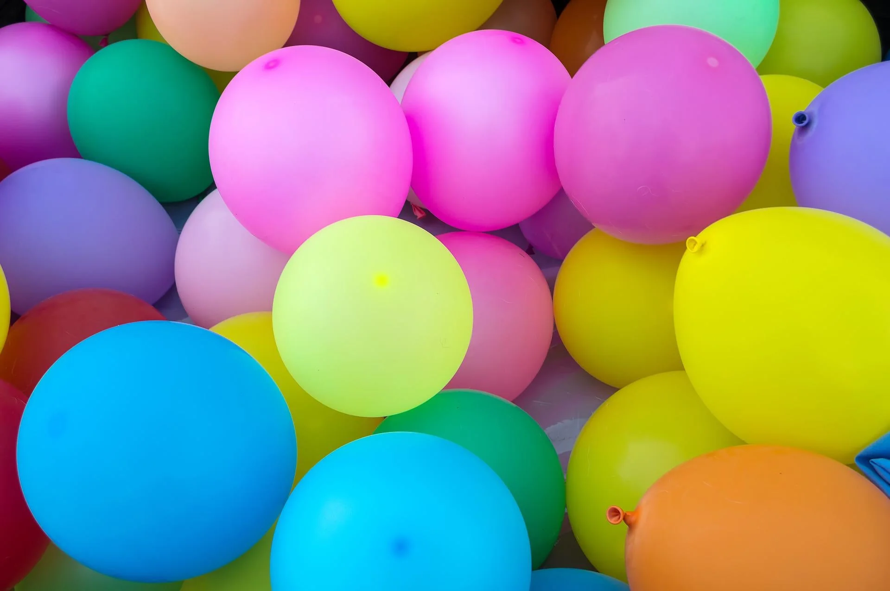

Centro Ecuestre Yeguada Carmen Martínez
Celebra tu cumpleaños
Una experiencia única e inolvidable junto a nuestros caballos y ponys, adaptada a cada edad y necesidad.

Centro Ecuestre Yeguada Carmen Martínez
Una experiencia única e inolvidable junto a nuestros caballos y ponys, adaptada a cada edad y necesidad.
La experiencia
En nuestras instalaciones ofrecemos un servicio de celebración de cumpleaños donde los niños realizarán divertidas actividades con caballos y ponys, en un entorno natural único.
Todas las actividades se adaptan a la edad de los niños y a sus requerimientos específicos.
Mientras los niños se divierten, los familiares disfrutan de un espacio cercano a la zona de actividades.
Se permite traer comida de fuera o contratar nuestro servicio de catering. Nuestro centro se lo facilita.
Disponemos de invitaciones para enviar por correo electrónico a todos tus invitados.
Disponibilidad
Entre semana
Fines de semana
Domingos especiales para grupos a partir de 20 niñ@s. ¡Consúltanos!
Actividades
Talleres de carácter lúdico en torno al caballo y su mundo: cuidados, equipado, alimentación, psicología y mucho más.
Los niños aprenderán el cuidado e higiene del caballo.
Aprenden los nombres y componentes del equipo de trabajo del caballo.
Los niños montarán a caballo y pony acompañados por monitores.
Visita al granero y almacén de alimentación.
Aprenden las partes del caballo y su psicología.
Conocerán las cuadras y sus elementos.
Servicio adicional
Para todos los eventos contamos, si lo precisan, de servicio fotográfico especializado para capturar cada momento especial de la celebración.
Yeguada Carmen Martínez
Ponte en contacto con nosotros y diseñamos juntos el cumpleaños perfecto. Recuerda que enviamos invitaciones digitales por correo electrónico.
Centro Ecuestre Yeguada Carmen Martínez · Celebraciones a Caballo